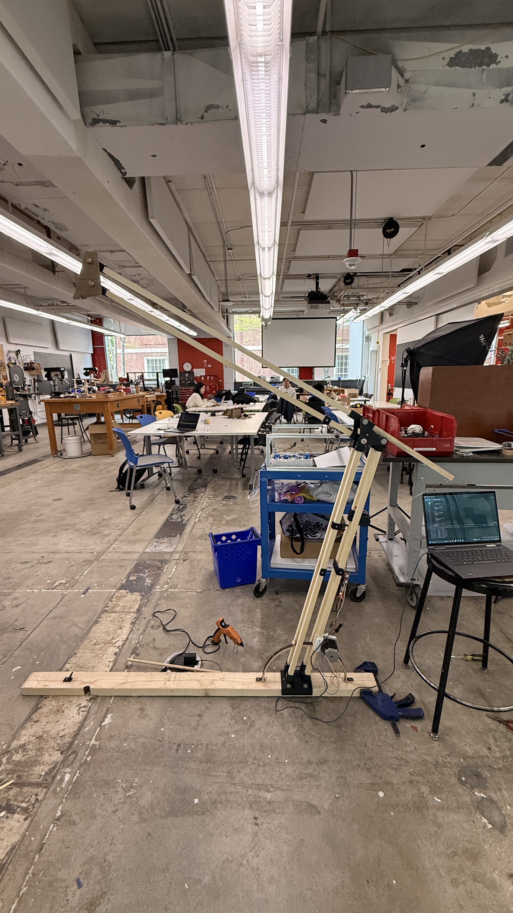
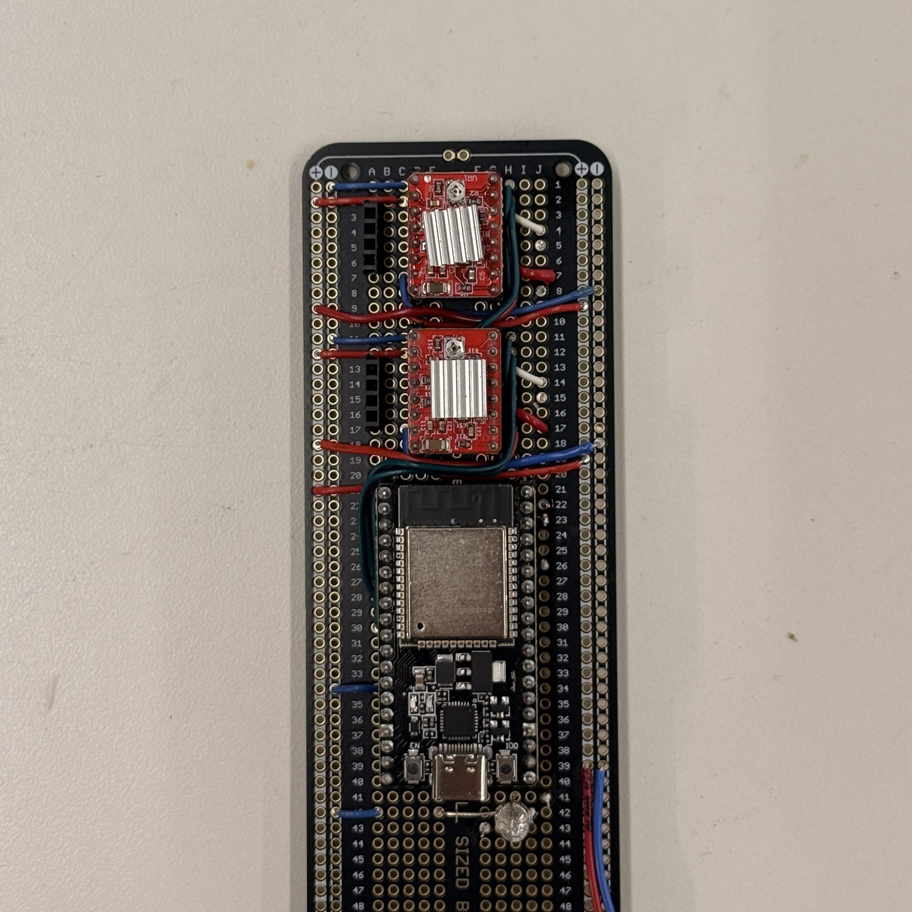
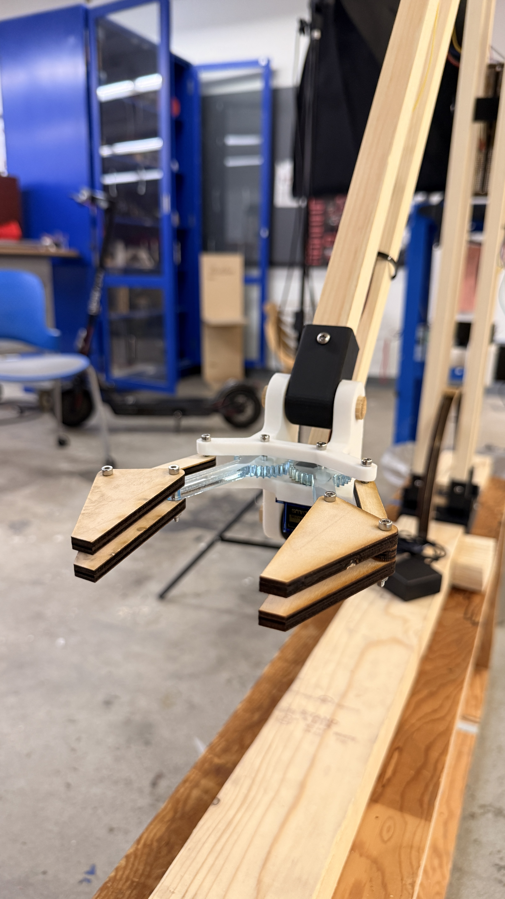
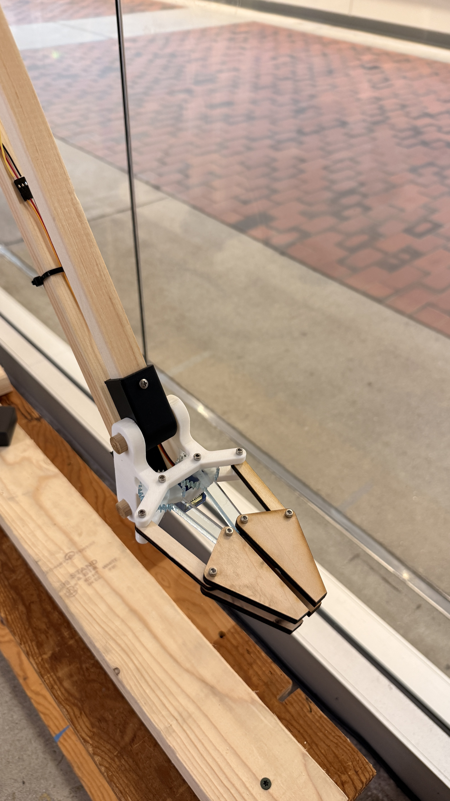
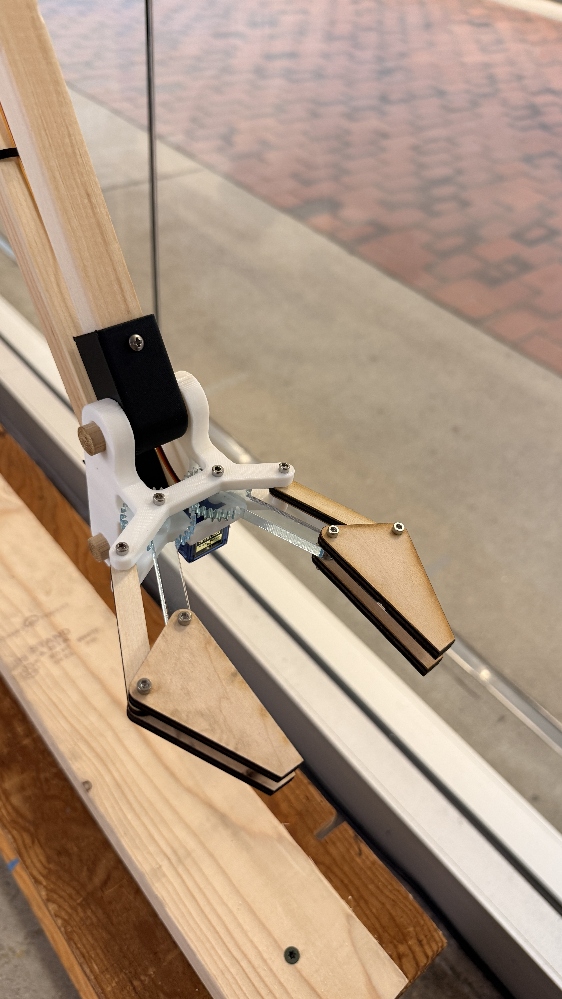

Overview
The Robotic Arm project is a system built from scratch to pick and place cubes. At its current stage, the arm is fully functional; it can automatically calibrate to determine its current position, manually be controlled by a laptop program, save favorite positions, and move reliably between stored positions. The system incorporates limit switches, Nema 17 and Nema 23 stepper motors, a protoboard with drivers and microcontroller, and various fabricated parts (3D-printed, laser-cut, and handmade). The claw is a recent addition, and still needs to be tested and integrated into the programming; it is designed to open and close in a parallel fashion and will have a capacitive rubber grip to detect the force at which it is holding an object.
Motion & control
Auto-calibration, laptop manual control, saved positions, and reliable moves between stored waypoints.
Hardware
Limit switches, Nema 17/23 stepper motors, driver protoboard, and mixed 3D-printed, laser-cut, and handmade structure.
Gripper (in progress)
Parallel-opening claw with planned capacitive rubber grip for hold-force sensing—integration and testing still ahead.
Goal
Reliable cube pick-and-place using the full stack above once the claw is wired into the control loop.
Software & demos
See the below clips for the current capabilities of the arm.
Mechanical build & electronics
Structure and wiring for the stepper-driven links, limit-switch homing, and control board.





Parallel gripper
Recent claw hardware: parallel-opening jaws and a planned capacitive rubber grip for hold-force feedback. Programming integration and pick-and-place testing are the next steps.


